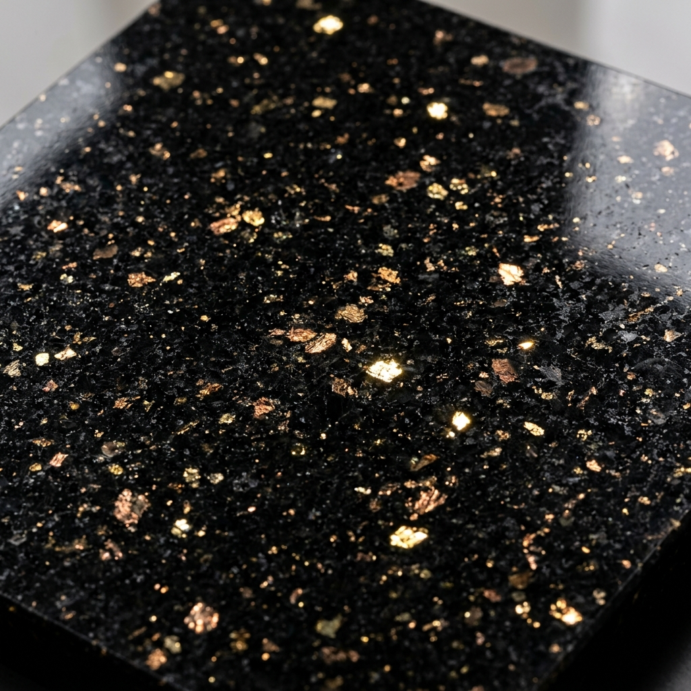
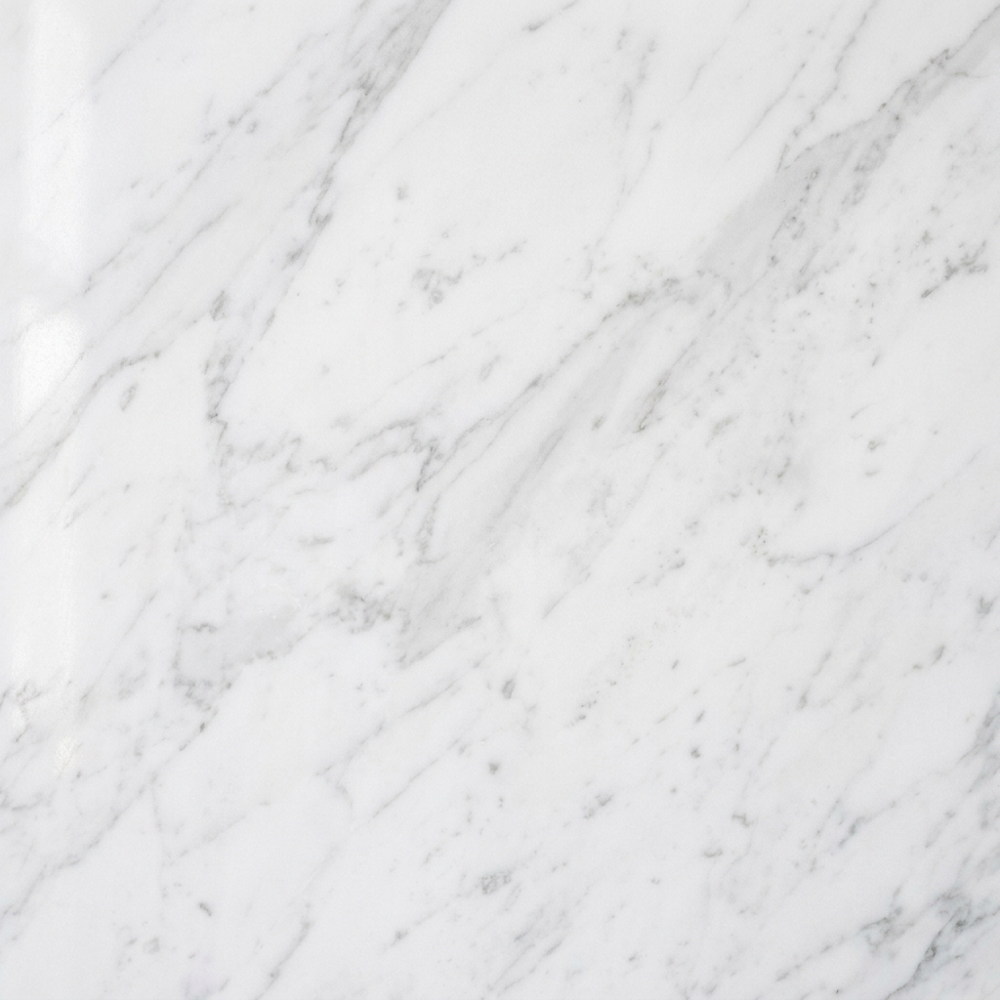
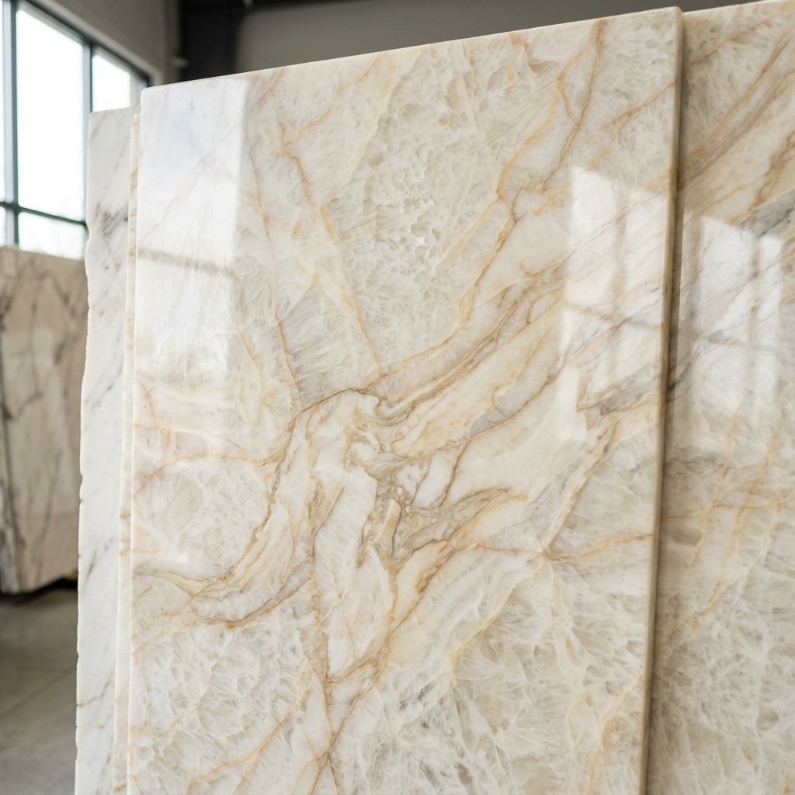
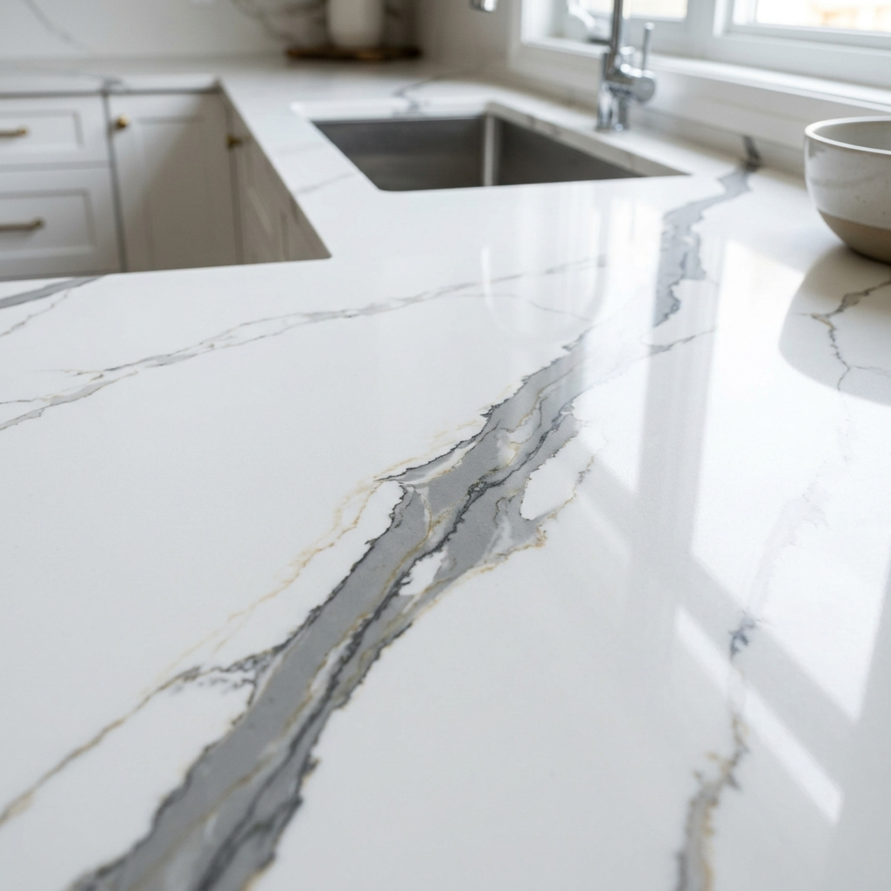
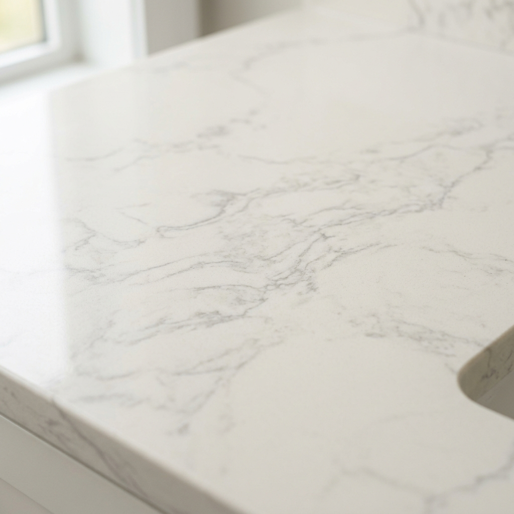
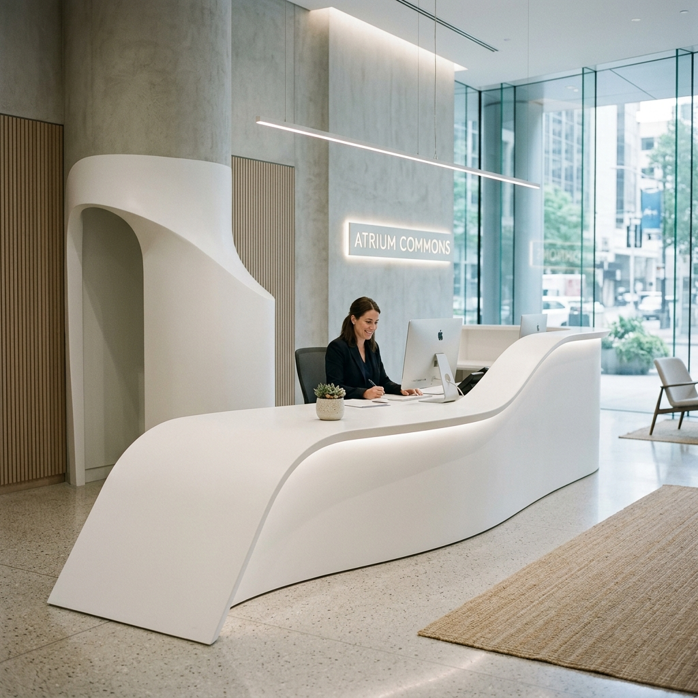
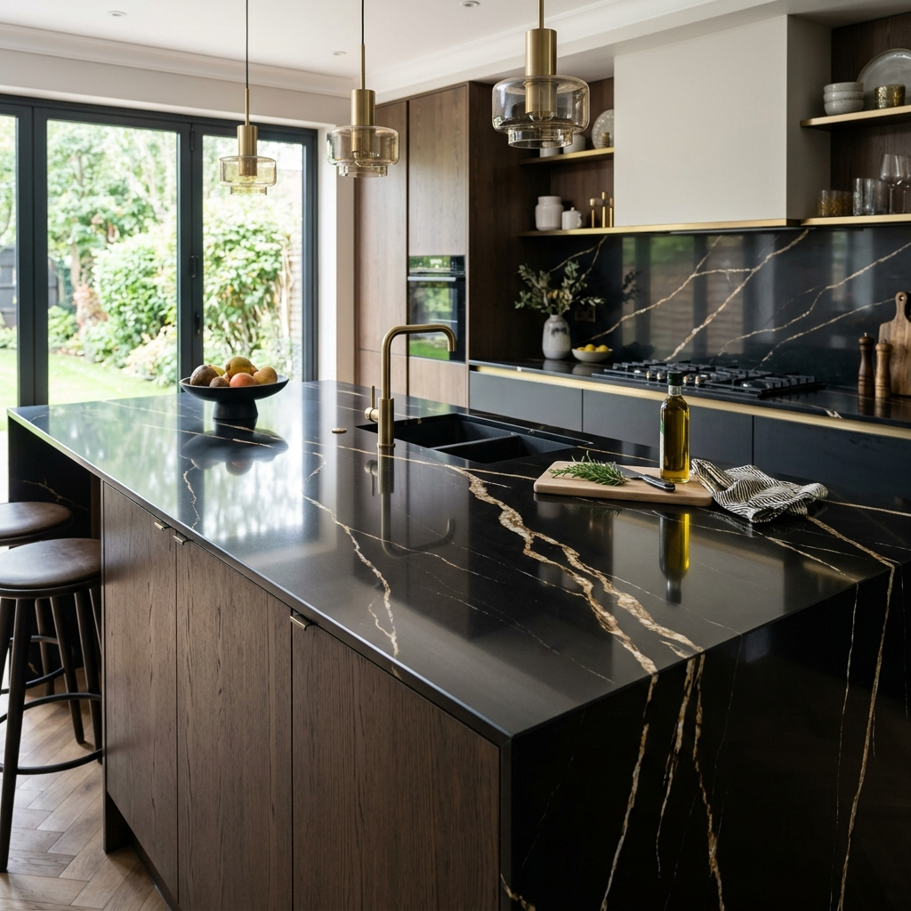
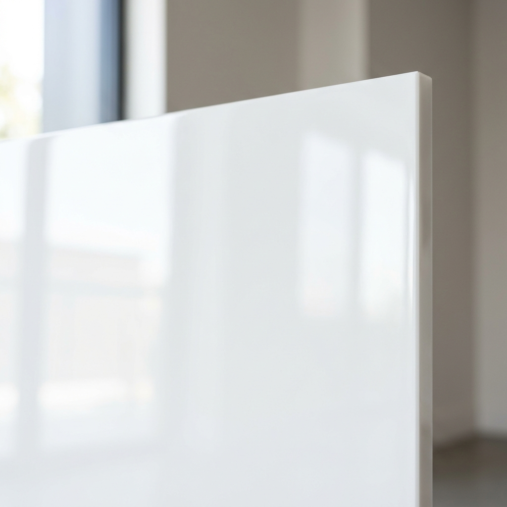
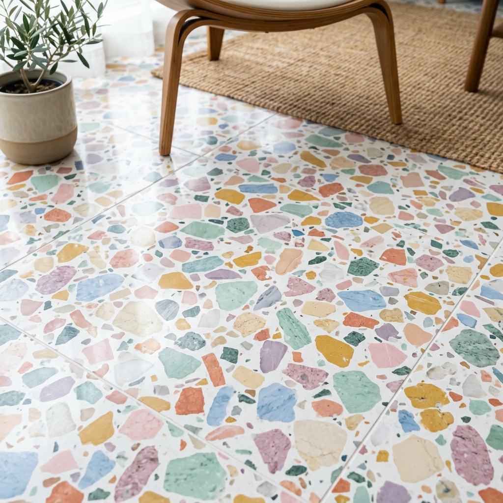

9 Nhóm Đá Hoa Cương & Vật Liệu Ốp Lát Phổ Biến
Tổng quan thị trường đá tự nhiên, đá nhân tạo và vật liệu giả đá hiện nay — so sánh ưu nhược điểm, vị trí ứng dụng và cách chọn đá phù hợp cho từng hạng mục công trình.
"Đá hoa cương" thực tế gồm những gì?
Về kỹ thuật, đá hoa cương là granite tự nhiên. Nhưng trên thị trường Việt Nam, tên gọi này được dùng rộng rãi cho cả đá tự nhiên, đá nhân tạo và vật liệu giả đá.
Đá tự nhiên
- Granite tự nhiên
- Marble tự nhiên
- Quartzite tự nhiên
Đá nhân tạo
- Quartz nhân tạo (đá thạch anh)
- Marble nhân tạo
- Solid Surface
- Terrazzo composite
Vật liệu giả đá
- Đá nung kết / Porcelain slab
- Đá nano kính, đá trắng sứ
- Tấm ceramic khổ lớn
Khi mua hàng, đừng chỉ hỏi "đá hoa cương loại nào", mà cần hỏi rõ: vật liệu gì, cốt đá là gì, có nhựa resin không, vân xuyên thân hay chỉ in mặt, bề mặt đánh bóng hay phủ men, có dùng ngoài trời / làm bếp được không.
Đặc tính từng nhóm đá
Mỗi nhóm đá có ưu điểm, hạn chế và vị trí ứng dụng phù hợp riêng. Tham khảo chi tiết bên dưới để chọn được vật liệu tối ưu nhất.

Ấn ĐộKIM SA TRUNG
Nền đen sâu với hạt ánh kim lấp lánh sang trọng, chịu nhiệt và chống trầy xước cực tốt.
ĐEN ABSOLUTE
Màu đen tuyền bóng gương tuyệt đối, hiện đại và có độ cứng siêu việt.
TRẮNG SUỐI LAU
Màu trắng xám muối tiêu quốc dân, giá thành rẻ, cực kỳ bền bỉ cho tam cấp và cầu thang.

Hy LạpVOLAKAS HY LẠP
Đường vân xám loang mềm mại trên nền trắng sứ sang trọng và quý phái bậc nhất.
CARRARA Ý
Mẫu vân dạng sợi mảnh xám đan xen tinh tế, dòng đá cẩm thạch hoàng gia kinh điển.
DARK EMPERADOR
Tông màu nâu ấm cúng điểm xuyết các vân chỉ trắng nghệ thuật ngẫu nhiên.

BrazilTAJ MAHAL
Nền vàng kem ngọc ngà, độ cứng vượt trội, chống xước cực tốt, đắt giá và thượng lưu.
CRISTALLO
Đá thạch anh tinh thể bán trong suốt, hoàn hảo cho các hạng mục vách tivi xuyên sáng LED.
ONYX MẬT ONG
Khả năng xuyên sáng nổi bật lên tới 90%, vân sóng ngọc cam mật ong lộng lẫy.
TRAVERTINE
Kết cấu lỗ tổ ong tự nhiên độc đáo tông kem ấm cổ điển, tối ưu cho ốp mặt tiền.

Việt NamVICOSTONE CALACATTA
Đường vân xám/vàng lớn chạy uốn lượn mạnh mẽ trên nền trắng tinh khiết, chống ố chống xước.
TRẮNG TUYẾT TRƠN
Tông màu trắng tinh khôi tối giản, liền mạch, bề mặt nhẵn mịn chống bám bẩn cực tốt.
SPARKLING WHITE
Nền trắng gương điểm các hạt thạch anh lấp lánh phản quang tuyệt đẹp dưới ánh đèn.

Oman/TQKEM OMAN
Tông màu kem mịn màng đồng nhất, chi phí cực kỳ tối ưu cho cầu thang lớn.
TRẮNG VÂN MÂY MỜ
Họa tiết vân loang xám nhẹ mềm mại tinh tế, thích hợp cho kệ tivi, bàn trà.

Hàn QuốcTRẮNG ACRYLIC TRƠN
Có khả năng ghép nối 100% không tì vết, uốn nhiệt tạo hình cong nghệ thuật độc đáo.
TERRAZZO SOLID
Nền nhựa acrylic trộn hạt thạch anh và đá màu pastel trẻ trung thời thượng.

Ý/Ấn ĐộCALACATTA NUNG KẾT
Khổ siêu lớn, vân in kỹ thuật số xuyên thân 3D cực sắc nét, siêu cứng, chống xước tuyệt đối.
XÁM XI MĂNG
Bề mặt matte mờ sần màu xi măng sang trọng tối giản phong cách công nghiệp.

Trung QuốcTRẮNG SỨ DẺO
Màu trắng tinh khiết, siêu bóng gương, đúc đặc hoàn toàn chống ố, chịu lực bền bỉ.
TRẮNG SỨ VÂN MÂY
Vân giả thạch anh/marble phủ men bóng cực kỳ bền, thẩm mỹ cao cho bàn ăn.

Việt NamMICRO TERRAZZO
Sử dụng hạt đá thạch anh siêu nhỏ rải đều tinh tế trên nền bê tông trắng mài bóng.
TERRAZZO HẠT LỚN
Các mảnh đá cẩm thạch màu sắc sặc sỡ pha trộn phong cách kiến trúc Ý cổ điển retro.
Cẩm Nang & Hướng Dẫn Chọn Chất Liệu Đá Ốp Lát
1. Đá Granite Tự Nhiên (Đá Hoa Cương)
Granite là dòng đá tự nhiên hình thành từ magma đông nguội sâu trong lòng đất. Nhờ kết cấu tinh thể chặt chẽ, đây là vật liệu ốp lát có độ bền cơ lý tốt nhất.
Ưu điểm: Độ cứng cực cao (chỉ sau kim cương và thạch anh), chịu nhiệt tốt, chống trầy xước rất tốt và không bị ăn mòn bởi các hóa chất gia dụng có tính axit.
Hạn chế: Vân đá thường ở dạng hạt/mối tiêu đồng đều, ít có đường vân bay bổng loang mây lớn như Marble.
2. Đá Marble Tự Nhiên (Đá Cẩm Thạch)
Marble được tạo thành từ đá vôi chịu nhiệt độ và áp suất cao của vỏ trái đất, cấu tạo chủ yếu từ Canxit (CaCO3).
Ưu điểm: Đường vân loang to, mềm mại, bảng màu sang trọng quý phái nâng tầm đẳng cấp không gian.
Hạn chế: Mềm và giòn hơn granite, dễ bị trầy xước, dễ thấm ố nếu không được phủ chất chống thấm định kỳ.
3. Đá Quartzite Tự Nhiên
Quartzite là đá biến chất từ cát thạch anh tự nhiên, sở hữu vẻ đẹp nghệ thuật tựa như marble nhưng độ cứng cao hơn hẳn.
Ưu điểm: Vân thạch anh lấp lánh tự nhiên độc bản, chống xước, chống thấm tốt.
Hạn chế: Giá thành cực kỳ cao, cực kỳ khó gia công đòi hỏi thợ kỹ thuật tay nghề cao.
4. Đá Trang Trí Đặc Biệt (Onyx & Travertine)
Các vật liệu ốp lát nghệ thuật cao cấp để tạo điểm nhấn sang trọng cho biệt thự, khách sạn.
Đá Onyx: Có khả năng xuyên sáng tuyệt vời lên đến 90%, chuyên dùng làm vách tivi trang trí có đèn LED.
Đá Travertine: Kết cấu lỗ rỗng tổ ong mộc mạc phong cách Địa Trung Hải cổ điển.
5. Đá Thạch Anh Nhân Tạo (Engineered Quartz)
Được sản xuất từ khoảng 90% cốt thạch anh tự nhiên kết dính bằng nhựa resin chuyên dụng và chất tạo màu.
Ưu điểm: Độ cứng siêu việt, hoàn toàn không thấm nước, kháng khuẩn tốt, cực kỳ đa dạng vân trắng Calacatta giống tự nhiên.
Hạn chế: Chịu sốc nhiệt kém hơn đá tự nhiên do có chứa nhựa resin kết dính.
6. Đá Marble Nhân Tạo
Chế tạo từ bột đá cẩm thạch tự nhiên kết hợp keo kết dính polyester.
Ưu điểm: Trọng lượng nhẹ hơn đá tự nhiên, màu sắc đồng nhất không biến thiên lớn, chi phí cạnh tranh.
Hạn chế: Chịu trầy xước trung bình, nhạy cảm với nhiệt độ cao và axit.
7. Đá Solid Surface
Vật liệu composite acrylic cao cấp nổi tiếng với tính năng uốn nhiệt linh hoạt.
Ưu điểm: Cho phép ghép nối liền mạch 100% không để lộ mạch keo, dễ uốn cong mọi góc cạnh, chống thấm tuyệt đối.
Hạn chế: Bề mặt khá mềm nên dễ xước dăm nếu bị chà xát mạnh.
8. Đá Nung Kết & Porcelain Slab
Vật liệu thế hệ mới nung từ bột đá và đất sét ở nhiệt độ trên 1200°C.
Ưu điểm: Khổ tấm siêu lớn hạn chế mạch nối, siêu cứng chịu lực, hoàn toàn không thấm, kháng tia UV tốt.
Hạn chế: Tấm mỏng giòn, dễ mẻ cạnh khi thi công nếu thợ không có kinh nghiệm cắt.
9. Đá Trắng Sứ & Nano Kính
Vật liệu giả đá đúc đặc bóng men gương cao cấp.
Ưu điểm: Độ bóng cực kỳ cao, tông trắng tinh khôi chống thấm ố 100%, giá cả hợp lý dễ tiếp cận.
Hạn chế: Có độ giòn nhất định, nếu sứt mẻ góc cạnh lớn sẽ khó phục hồi nguyên trạng.
10. Đá Terrazzo Nhân Tạo
Đá composite nghệ thuật pha trộn các mảnh cẩm thạch màu sắc sặc sỡ pha trộn phong cách kiến trúc Ý cổ điển retro.
Ưu điểm: Vẻ đẹp độc đáo, phong cách trẻ trung hiện đại, retro thời thượng.
Hạn chế: Cốt xi măng cần được chống thấm kỹ để tránh hút ẩm ố màu.
Bạn đã chọn được chất liệu ốp lát phù hợp?
Gửi hình ảnh mẫu hoặc kích thước sơ bộ qua Zalo để kỹ thuật viên của Xưởng đá Ngọc Cẩn khảo sát, đo đạc và báo giá trọn gói miễn phí.
Gửi Mẫu Qua Zalo NgayCác Kiểu Hoàn Thiện Bề Mặt Đá Phổ Biến
Mỗi phương pháp gia công bề mặt sẽ mang lại hiệu ứng thẩm mỹ, độ đậm màu sắc và khả năng chống trượt khác nhau cho cùng một loại đá.
1. Polished (Bóng gương)
Bề mặt được mài mịn và đánh bóng tối đa, tạo độ bóng gương phản chiếu ánh sáng cực cao. Giúp làm nổi bật màu sắc và đường vân tự nhiên rõ nét nhất. Dễ lau chùi nhưng dễ lộ vết xước và trơn trượt khi ướt.
2. Honed / Matte (Mờ / Nhám nhẹ)
Bề mặt được mài phẳng nhưng dừng lại trước công đoạn đánh bóng, tạo cảm giác mịn màng không phản chiếu (matte). Rất được ưa chuộng trong thiết kế tối giản hiện đại, che vết xước tốt hơn và ít trơn trượt hơn.
3. Leathered (Mờ sần nhẹ)
Bề mặt được xử lý bằng chổi mài kim cương tạo hiệu ứng gợn sóng sần nhẹ như da thuộc. Mang lại cảm giác mộc mạc, chống bám vân tay rất tốt, cực kỳ thích hợp cho bàn bếp và bàn đảo exotic.
4. Brushed (Chải giả cổ)
Xử lý bề mặt bằng bàn chải thép hoặc chổi mài mòn cao cấp để loại bỏ các hạt khoáng mềm, tạo chiều sâu gồ ghề tự nhiên và hiệu ứng cổ kính, mộc mạc cho phiến đá.
5. Flamed (Khò lửa)
Dùng ngọn lửa nhiệt độ cao quét qua bề mặt đá tự nhiên làm bong tróc các tinh thể thạch anh, tạo độ nhám sần sùi mạnh mẽ. Thường ứng dụng cho đá Granite lát ngoài trời, lối đi sân vườn, tam cấp để chống trượt tuyệt đối.
6. Bush-hammered (Băm nhám)
Sử dụng búa đập cơ học tạo ra vô số lỗ li ti đều đặn trên bề mặt đá. Tạo ma sát cao nhất, chống trơn trượt tối đa cho khu vực bể bơi, bậc thềm ngoài trời hoặc ram dốc.
Bảng So Sánh Kỹ Thuật 7 Nhóm Đá Phổ Biến
So sánh chi tiết 7 nhóm đá đang được sử dụng nhiều nhất hiện nay để bạn dễ dàng cân nhắc lựa chọn.
| Tiêu chí | Granite tự nhiên | Marble tự nhiên | Quartzite | Quartz nhân tạo | Solid Surface | Đá nung kết / Porcelain | Trắng sứ / Nano |
|---|---|---|---|---|---|---|---|
| Độ cứng (Mohs) | 7 (Rất cứng) | 4 (Trung bình) | 7 (Rất cứng) | 6.5 (Cứng) | ~3 (Mềm) | 6–7 (Cứng) | 5–6 (Tùy loại) |
| Chịu nhiệt độ cao | Cực tốt (mặt bếp) | Trung bình | Tốt | Tốt (có resin) | Trung bình–kém | Tốt | Tùy loại |
| Chống thấm nước | Tốt (sau khi phủ bóng) | Khá (cần chống thấm) | Khá (cần chống thấm) | Rất tốt (gần như tuyệt đối) | Tốt | Rất tốt | Tùy loại |
| Vân & màu sắc | Vân tự nhiên, màu trầm, mỗi tấm khác nhau | Vân mây mềm, sang trọng | Vân giống marble nhưng cứng hơn | Màu sắc đồng đều, vân hiện đại | Màu trơn, pastel, hạt terrazzo | Vân in kỹ thuật số, đa dạng | Trắng trơn hoặc vân marble |
| Dùng ngoài trời | Có | Không khuyến nghị | Có | Hạn chế (UV làm ngả màu) | Không | Tốt (chống UV) | Tùy loại |
| Vị trí khuyên dùng | Bếp, cầu thang, tam cấp, mặt tiền | Vách TV, sảnh, phòng tắm, bàn ăn | Đảo bếp cao cấp, bàn ăn, quầy bar | Mặt bếp, đảo bếp, lavabo | Lavabo liền khối, quầy lễ tân cong, y tế | Bàn ăn, bàn trà, vách TV, đảo bếp, mặt tiền | Bếp, lavabo, bậu cửa, vách trang trí |
| Phân khúc giá | Trung bình – Cao | Cao – Rất cao | Cao – Rất cao | Trung bình – Cao | Trung bình | Thấp – Trung bình (phổ thông); Cao (thương hiệu) | Thấp – Trung bình |
Chọn Loại Đá Phù Hợp Theo Từng Vị Trí
Mỗi sản phẩm có yêu cầu riêng về độ cứng, khả năng chịu nhiệt, chống thấm và thẩm mỹ. Tham khảo bảng gợi ý dưới đây để đưa ra lựa chọn tối ưu nhất.
| Sản phẩm / Hạng mục | Lựa chọn phù hợp nhất | Lựa chọn tiết kiệm | Không nên ưu tiên |
|---|---|---|---|
| Mặt bếp gia đình | Quartz, granite, đá nung kết loại tốt | Kim Sa Trung, granite trắng nội địa | Marble mềm, tấm men mỏng không rõ thông số |
| Đảo bếp | Quartz vân lớn, đá nung kết, quartzite | Porcelain slab có khung đỡ tốt | Tấm mỏng thi công không gia cường |
| Cầu thang | Granite tự nhiên | Trắng Suối Lau, đen Huế, Kim Sa | Marble bóng ở khu vực dễ trượt |
| Tam cấp ngoài trời | Granite nhám, basalt | Granite nội địa | Quartz có resin, Solid Surface |
| Bàn ăn | Đá nung kết, porcelain slab, quartz | Tấm porcelain phủ men | Marble dễ ăn mòn nếu dùng hằng ngày |
| Bàn trà | Đá nung kết, marble, terrazzo | Porcelain slab | Không có hạn chế lớn nếu ít chịu lực |
| Lavabo | Quartz, Solid Surface, đá nung kết | Marble nhân tạo đúc | Đá xốp chưa chống thấm |
| Vách TV | Porcelain slab, đá nung kết, marble | Gạch khổ lớn giả đá | Granite hạt nhỏ nếu cần vân liền |
| Mặt tiền | Granite, đá nung kết ngoài trời | Porcelain ngoại thất | Quartz nội thất, Solid Surface thường |
| Quầy lễ tân | Solid Surface, quartz, đá nung kết | Marble nhân tạo | Granite nếu cần tạo hình cong |
| Sàn phòng khách | Porcelain, granite, marble | Gạch granite/porcelain | Tấm mặt bàn không thiết kế cho lát sàn |
| Bàn thờ | Granite đen, đỏ, vàng, đá tự nhiên | Đen Huế, Kim Sa | Solid Surface hoặc vân quá hiện đại |
Xu Hướng Lựa Chọn Đá & Vật Liệu Ốp Lát 2025 - 2026
Các xu hướng nổi bật định hình không gian sống hiện đại được cập nhật từ các triển lãm nội thất và thiết kế kiến trúc mới nhất.
1. Nền trắng vân lớn tương phản & Chi tiết vàng đồng
Các dòng đá giả Marble Calacatta, Statuario với đường vân xám đậm hoặc vân vàng đồng chảy mạnh vẽ nên bức tranh nghệ thuật đầy sang trọng trên các diện tường vách TV lớn hoặc đảo bếp thác nước (waterfall).
2. Bề mặt nhám mờ, Silk và Leathered thay thế bóng gương
Xu hướng giảm bớt độ chói của bóng gương để hướng tới sự ấm áp, tinh tế của bề mặt mịn mờ (Matte/Silk) hoặc sần nhẹ kiểu da thuộc (Leathered). Giúp che khuyết điểm vết trầy xước rất tốt và tạo chiều sâu cho phiến đá dưới ánh đèn.
3. Tông màu ấm: Warm White, Creamy Beige và Greige
Màu trắng lạnh (cool white) đang dần được thay thế bởi các tông màu trắng ấm, kem cát và màu be xám (greige/taupe). Sự chuyển dịch này tạo ra không gian ấm áp, thân thiện và dễ dàng kết hợp với chất liệu gỗ tự nhiên hay kim loại.
4. Vân xuyên thân (Full-body vein) cho đá nhân tạo & đá nung
Công nghệ sản xuất mới cho phép các đường vân đá tiếp nối chạy xuyên suốt độ dày của tấm (3D/Through-body) thay vì chỉ in trên lớp men mặt. Điều này giúp các mép bo cạnh hoặc rãnh chậu rửa trông chân thực như đá tự nhiên nguyên khối.
Bảng Giá Vật Liệu Tham Khảo (Giá tấm)
Mức giá dưới đây là tham khảo trên thị trường, chưa bao gồm chi phí cắt, bo cạnh, khoét chậu, vận chuyển và lắp đặt. Vui lòng liên hệ Zalo để nhận báo giá chính xác theo kích thước và chủng loại.
| Nhóm đá | Phân khúc phổ thông | Phân khúc cao cấp / nhập khẩu | Ghi chú |
|---|---|---|---|
| Granite tự nhiên nội địa | Liên hệ báo giá | — | Trắng Suối Lau, Đen Huế, Kim Sa Trung, Vàng Bình Định… |
| Granite nhập khẩu | Liên hệ báo giá | Liên hệ báo giá | Kim Sa Ấn Độ, Absolute Black, River White, Kashmir… |
| Marble tự nhiên | Liên hệ báo giá | Liên hệ báo giá | Carrara, Calacatta, Statuario, Emperador… biến động theo lô |
| Quartz nhân tạo | Liên hệ báo giá | Liên hệ báo giá | Tùy thương hiệu và độ dày |
| Đá nung kết / Porcelain slab | Khoảng 650.000 – 1.200.000 đ/m² | Từ khoảng 2.000.000 đ/m² trở lên | Phổ thông: Việt Nam/Trung Quốc. Cao cấp: Ấn Độ, thương hiệu lớn |
| Solid Surface | Liên hệ báo giá | Liên hệ báo giá | Tùy thương hiệu và độ dày |
| Trắng sứ / Đá nano kính | Liên hệ báo giá | Liên hệ báo giá | Thường cao hơn một số granite nội địa; biến động theo khu vực |
| Terrazzo tấm | Liên hệ báo giá | Liên hệ báo giá | Tùy loại resin/xi măng và kích thước hạt |
Lưu ý: Giá tấm chưa phản ánh đầy đủ chi phí thực tế. Hãy gửi kích thước và mẫu qua Zalo 0905 035 789 để được báo giá trọn gói.
Cách Nhận Biết Chính Xác Vật Liệu Khi Xem Mẫu
Đừng dựa vào tên gọi của người bán. Hãy quan sát cạnh tấm đá — đó là dấu hiệu trung thực nhất để biết bạn đang cầm loại vật liệu nào.
Trường hợp 1
Mặt bóng có vân nhưng cạnh là một màu cốt khác
Khả năng cao là: Porcelain slab phủ men, gạch khổ lớn, đá nung kết vân mặt, hoặc tấm ceramic giả đá.
Trường hợp 2
Hạt nhỏ xuất hiện cả mặt và cạnh
Khả năng cao là: Quartz nhân tạo, granite tự nhiên, terrazzo, hoặc composite đá.
Trường hợp 3
Trắng bóng gần giống kính
Khả năng cao là: Đá nano kính, crystallized glass, hoặc trắng sứ nhân tạo.
Trường hợp 4
Có thể uốn cong, ghép gần như mất đường nối
Khả năng rất cao là Solid Surface — đây là ưu điểm vượt trội chỉ nhóm này có.
Trường hợp 5
Vân không lặp lại, mặt sau cũng có khoáng tự nhiên
Khả năng cao là granite, marble hoặc quartzite tự nhiên.
Tóm tắt nhanh 3 nhóm vật liệu chính
| Nhóm chất liệu | Nguồn gốc cấu tạo | Ví dụ đại diện |
|---|---|---|
| Đá tự nhiên | Khai thác trực tiếp từ mỏ, xẻ tấm và mài bóng cơ học | Granite (hoa cương), Marble (cẩm thạch), Quartzite, Onyx, Travertine |
| Đá nhân tạo | Bột đá, cát thạch anh kết dính bằng nhựa resin hoặc xi măng ép khối | Quartz nhân tạo, Marble nhân tạo, Solid Surface, Trắng sứ nano |
| Đá nung & Tấm sứ | Khoáng chất tự nhiên nghiền nhỏ, ép áp lực cao và nung ở nhiệt độ > 1200°C | Đá nung kết (Sintered Stone), Porcelain Slab khổ lớn |
15 Câu Hỏi Cần Hỏi Nhà Cung Cấp
Trước khi ký đơn, yêu cầu người bán trả lời các câu hỏi dưới đây để tránh rủi ro về chất lượng và chi phí phát sinh.
1. Tên kỹ thuật chính xác của vật liệu này là gì?
2. Đây là đá tự nhiên, đá nhân tạo hay vật liệu giả đá?
3. Hoa văn/Đường vân là xuyên thân (full-body) hay chỉ in trên bề mặt?
4. Bề mặt là đánh bóng trực tiếp trên cốt đá hay phủ lớp men bóng?
5. Độ dày thực tế của tấm đá là bao nhiêu?
6. Có dùng được cho mặt bàn bếp nấu ăn hằng ngày không?
7. Có chịu được sốc nhiệt và nồi chảo nóng vừa nấu xong đặt lên không?
8. Có dùng ngoài trời, chịu được nắng mưa và tia cực tím (UV) không?
9. Có tài liệu chứng nhận thông số kỹ thuật hoặc kết quả thử nghiệm chất lượng không?
10. Chính sách bảo hành nứt, ố màu, cong vênh và bong tróc bề mặt cụ thể thế nào?
11. Đơn giá báo đã bao gồm chi phí khoét chậu, khoét bếp, bo cạnh và lắp đặt chưa?
12. Sau khi cắt, mài cạnh hoặc khoét lỗ thì mép đá có lộ xương cốt khác màu không?
13. Nếu không may bị mẻ cạnh hoặc nứt nhẹ trong quá trình sử dụng thì có sửa được không?
14. Khung và lớp xương đỡ chịu lực bên dưới mặt đá dùng vật liệu gì, khoảng cách gia cố thế nào?
15. Có công trình thực tế đã sử dụng loại đá này trên 2 năm để tham khảo không?
Đánh Giá Cuối Cùng — Chọn Đá Theo Nhu Cầu
Thị trường hiện chia thành hai hướng rõ rệt: granite tự nhiên giữ phân khúc bền chắc, trong khi quartz, đá nung kết và porcelain slab chiếm ưu thế trong nội thất hiện đại.
Bàn ăn, bàn trà, vách TV
Porcelain slab hoặc đá nung kết phủ men bóng — nhận vân đẹp, độ bóng cao, giá dễ tiếp cận. Cần đơn vị gia công cạnh tốt và khung đỡ đúng chuẩn.
Mặt bếp dùng thường xuyên
Ưu tiên theo thứ tự: (1) Quartz nhân tạo chất lượng tốt; (2) Granite tự nhiên; (3) Đá nung kết có thông số rõ ràng, thi công đúng; (4) Trắng sứ/porcelain giá rẻ chỉ khi đã xác minh chịu nhiệt, chống xước, bền cạnh.
Cầu thang, tam cấp
Granite tự nhiên như Kim Sa Trung, Trắng Suối Lau, Đen Campuchia, Đen Huế, Vàng Bình Định — thực dụng, bền, dễ sửa chữa hơn tấm men mỏng.
Lavabo & quầy cong
Solid Surface nếu cần liền mạch, uốn cong. Quartz nếu cần cứng và bền mặt. Đá nung kết nếu ưu tiên tấm mỏng và vân đẹp.
Phong cách trẻ, café, shop
Terrazzo — hạt nhỏ, hạt lớn, terrazzo resin đa màu; phù hợp sàn, quầy, bàn, không gian retro và hiện đại.
Đẳng cấp, sang trọng
Quartzite tự nhiên (Taj Mahal, Patagonia, Blue Roma…) hoặc Marble nhập khẩu cho đảo bếp, bàn ăn, vách trang trí cao cấp.
Nhận định thị trường
Xu hướng nổi bật hiện nay không phải granite tự nhiên biến mất — mà là thị trường đang chia thành hai hướng: Granite tự nhiên tiếp tục giữ phân khúc cầu thang, tam cấp, bếp phổ thông và công trình bền chắc; Quartz, đá nung kết và porcelain slab chiếm ưu thế hơn trong căn hộ, bàn ăn, đảo bếp, vách TV và nội thất hiện đại nhờ tông trắng–xám, vân marble, khổ lớn và bề mặt bóng.